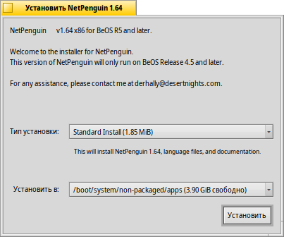
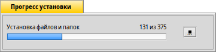

Русский
Русский Français
Français Deutsch
Deutsch Italiano
Italiano Español
Español Svenska
Svenska 日本語
日本語 Українська
Українська 中文 ［中文］
中文 ［中文］ Português
Português English
English PackageInstaller
PackageInstaller
| Расположение в Deskbar: | Отсутствует в меню Deskbar, обычно запускается по двойному щелчку мыши по файлу изображения. | |
| Расположение в Tracker: | /boot/system/apps/PackageInstaller | |
| Настройки хранятся по адресу: | отсутствуют |
Это черновой вариант. Пожалуйста, обратитесь к данной странице позже.
PackageInstaller - это приложение установщик BeOS-пакетов в формате PKG. Имеет простой в использовании графический интерфейс, который помогает быстро устанавливать pkg-пакеты в Haiku.
Приложение запустится автоматически когда вы попытаетесь открыть файлы с расширением .pkg.
Главное окно предлагает выбрать:
- Тип установки (Installation type).
- Место установки (Install to).
После щелчка по кнопке Установить (Install) начнётся процесс распаковки и установки.
Во время установки могут появится предупреждения или ошибки, которые сообщат о зависимости устанавливаемого пакете от той или иной библиотеки. Другими словами, вам потребуется сначала установить требуемые библиотеки, перед тем как устанавливать данный пакет.
По завершении установки, пакет будет помещён в меню приложений Deskbar.